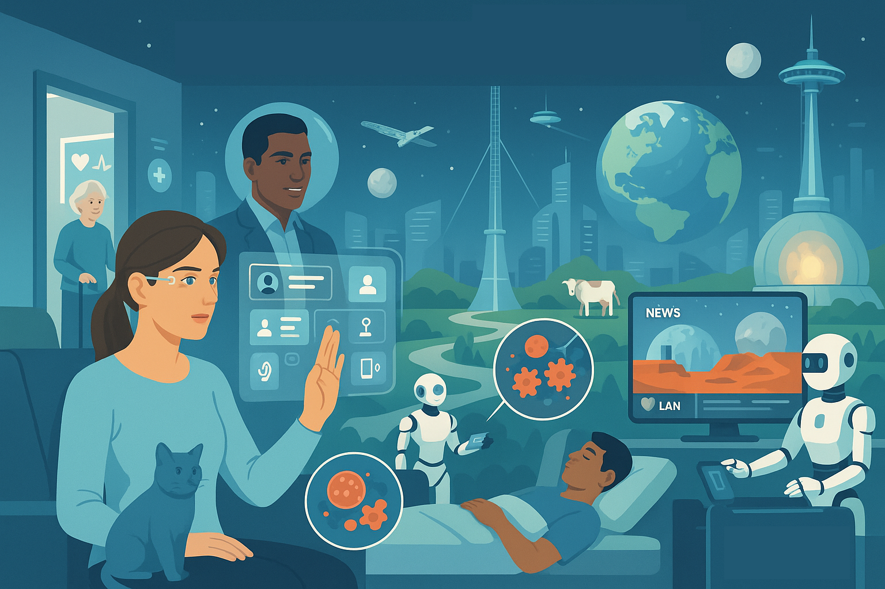

Sesli Dinle
Teknolojinin Evrimi ve Toplumsal Etkileri
Kaku, teknolojik ilerlemenin genellikle dört aşamadan geçtiğini belirtir:
- Başlangıçta kıymetli ve nadir (Aşama I)
- Sonra kişisel kullanıma açılması (Aşama II)
- Yaygınlaşıp ucuzlaması (Aşama III)
- Son olarak hayatın dokusuna işlenerek görünmez bir altyapı haline gelmesi (Aşama IV)
Mağara Adamı Prensibi
Yazar, bazı fütüristik tahminlerin (örneğin kağıtsız ofis, insansız şehir, siber turizm) neden tam olarak gerçekleşmediğini açıklamak için “Mağara Adamı Prensibi”ni öne sürer. Bu prensibe göre, modern teknoloji ile ilkel atalarımızın arzuları arasında bir çatışma olduğunda, genellikle ilkel arzular (örneğin, somut kanıt isteği, yüz yüze etkileşim ihtiyacı, sosyal bağ kurma ve statü ihtiyacı) galip gelir. Bu durum, teknolojinin gelecekteki sosyal etkileşimleri nasıl şekillendireceğini anlamada önemli bir faktördür.
Anahtar Teknolojiler ve Gelecek Öngörüleri
1️⃣ Bilgisayarın Geleceği: Maddenin Üzerindeki Zihin
Yakın Gelecek (2030’a Kadar): Moore Yasası’nın devamıyla bilgisayar gücü artmaya devam edecek. Çipler o kadar ucuzlayıp küçülecek ki, giysilerimizden mobilyalarımıza, duvarlarımızdan vücudumuza kadar her yere dağılacak ve hepsi internete bağlı olarak isteklerimizi sessizce yerine getirecek. İnternet, gözlükler ve kontakt lensler aracılığıyla hayatımıza entegre olacak, yüz tanıma ve anında bilgi erişimi sağlayacak. Görüntüler doğrudan retinamıza yansıtılabilecek veya lensin kendisi bir ekran görevi görecek. Sürücüsüz arabalar GPS ve gelişmiş sensörler sayesinde yaygınlaşacak. Evlerimizdeki duvarlar, devasa, esnek OLED (organik ışık yayan diyotlar) ekranlara dönüşerek hem duvar kağıdının desenini bir düğmeyle değiştirmemize hem de dünyanın herhangi bir yerindeki insanlarla 3 boyutlu tele-varlık (telepresence) aracılığıyla sanal toplantılar yapmamıza olanak tanıyacak. Sanal dünyalar ve haptik teknoloji gelişecek. Esnek elektronik kağıtlar sayesinde dizüstü bilgisayarlar katlanıp cüzdanımıza girebilecek. Tıbbi teşhisler; DNA çipleri ve taşınabilir MRI cihazları ile evden yapılabilecek.
Yüzyıl Ortası (2030-2070): Moore Yasası’nın sınırlarına ulaşılması bekleniyor. Silikon sonrası teknolojiler (atomik transistörler, grafen, kuantum bilgisayarlar) önem kazanacak. Gerçeklikle sanal gerçekliğin iç içe geçtiği “artırılmış gerçeklik” yaygınlaşacak. Bu durum; turizm, eğitim, askeri uygulamalar ve daha birçok alanı dönüştürecek. Evrensel çeviriciler sayesinde dil engelleri azalacak. Hologramlar ve gerçek 3 boyutlu TV’ler gelişecek.
Uzak Gelecek (2070-2100): Bilgisayarlar doğrudan zihin gücüyle kontrol edilebilecek (beyin-bilgisayar arayüzleri). Zihin okuma ve hatta rüyaları kaydetme mümkün olabilecek. Telekinezi benzeri yetenekler; süperiletkenler aracılığıyla nesneleri zihinle hareket ettirmeyi sağlayabilir.
2️⃣ Yapay Zekanın (AI) Geleceği: Makinelerin Yükselişi
Mevcut Durum ve Zorluklar: Yapay zeka (YZ), insanlığın en büyük hayallerinden ve aynı zamanda en derin korkularından biri olmuştur. Tarih boyunca YZ alanında büyük beklentiler ve ardından gelen “YZ kışları” (fonların kesildiği ve hayal kırıklıklarının yaşandığı dönemler) yaşanmıştır. IBM’in Deep Blue bilgisayarının dünya satranç şampiyonunu yenmesi gibi başarılar, makinelerin belirli görevlerde insanüstü performans gösterebileceğini kanıtlasa da, gerçek anlamda “düşünen” makineler yaratmaktan hala çok uzaktayız.
Günümüz robotları (örneğin ASIMO) etkileyici görünse de, zekaları sınırlıdır ve önceden programlanmışlardır. Yapay zekanın önündeki iki temel sorun örüntü tanıma ve sağduyudur. Beynin dijital bir bilgisayar gibi değil, bir öğrenme makinesi (nöral ağ) gibi çalıştığı anlaşılmıştır.
Yakın Gelecek ve Yüzyıl Ortası: Gelecekte, uzman sistemler (robodoktor, roboavukat gibi belirli alanlarda insan uzmanlığını taklit eden yazılımlar) hayatımıza daha fazla girecek. Robot hemşireler ve modüler robotlar (şekil değiştirebilen) farklı alanlarda kullanılacak. Robot cerrahlar (da Vinci sistemi gibi), aşçılar ve müzisyenler gelişecek. Duygusal robotlar (örneğin KISMET), insanlarla etkileşim kurabilen ancak gerçek duyguları hissetmeyen makineler olarak ortaya çıkacak.
Uzak Gelecek ve Tekillik: İnsan beynini tersine mühendislikle anlama çabaları (süper bilgisayar simülasyonları, nöron haritalama) hız kazanacak. Makinelerin insan zekasını aşması (tekillik) olasılığı tartışılmakla birlikte, Moore Yasası’nın sonu, hızın zekaya eşit olmaması, yazılım darboğazı gibi engeller bulunmaktadır. Ray Kurzweil gibi fütüristler, bilgisayar gücündeki üstel artışa dayanarak tekilliğin 2045 gibi yakın bir tarihte gerçekleşebileceğini öngörürken, birçok bilim insanı bu tarihin çok daha uzak (yüzyıllar) olduğunu veya kesin bir zaman vermenin mümkün olmadığını düşünmektedir. İnsanların robotlarla birleşmesi (protezler, geliştirilmiş yetenekler, suretler) bir olasılık olarak değerlendirilmektedir.
3️⃣ Tıbbın Geleceği: Yaşamın Yeniden Tanımlanması
Moleküler Tıp Devrimi: Tıp; atomlar, moleküller ve genler düzeyine inerek bir devrim yaşamaktadır. İnsan Genom Projesi ve biyoinformatik sayesinde kişisel genom dizileme ucuzlayacak ve yaygınlaşacaktır. İnsan Genom Projesi, herkesin kişisel genomunun bir CD-ROM’da bulunabileceği bir çağı başlatmıştır. Biyoinformatik (yani binlerce organizmanın genomunu hızla taramak ve analiz etmek için bilgisayarları kullanmak) hastalıkların genetik temellerini anlamada ve adli tıpta devrim yaratmaktadır.
Yakın Gelecek ve Yüzyıl Ortası: Doktor ziyaretleri robodoktorlar ve evdeki sensörler aracılığıyla yapılacak. Kanser gibi hastalıklar, bir tümör oluşmadan yıllar önce DNA çipleriyle ve nanopartiküllerle (“akıllı bombalar”) tedavi edilebilecek. Doku mühendisliği ve kök hücre teknolojisi sayesinde hasarlı organlar yenilenebilecek. Kök hücreler (“ana hücreler”), vücuttaki her tür hücreye dönüşebilme potansiyelleriyle diyabet, kalp hastalığı, Alzheimer, Parkinson ve omurilik yaralanmaları gibi birçok hastalığın tedavisinde devrim yaratma vaadi taşımaktadır. İnsan klonlama prensipte mümkün olsa da, etik ve sosyal engeller nedeniyle yaygınlaşması beklenmemektedir. Hayvan klonlaması bile zorlu bir süreçtir. Gen terapisi, özellikle tek bir genin mutasyonundan kaynaklanan 5.000 civarında genetik hastalığın tedavisinde umut vaat etmektedir. Gen terapisi, özellikle tek gen kaynaklı hastalıkların tedavisinde standart hale gelecek.
Uzak Gelecek: “Tasarım bebekler” ve insan yeteneklerini genetik olarak geliştirme olasılığı ortaya çıkacak. Yaşlanmanın sırları da çözülmeye çalışılmaktadır. Yaşlanma, genetik ve hücresel düzeydeki hataların birikimi olarak görülmektedir. Kalori kısıtlamasının yaşam süresini uzattığı ve yaşa bağlı hastalıkları azalttığı çeşitli canlılarda kanıtlanmıştır. Bu etkiyi sağlayan SIR2/SIRT genleri ve bunları aktive eden resveratrol gibi moleküller incelenmektedir. Hücre uçlarındaki telomerlerin kısalması da yaşlanmayla ilişkilidir ve kanser hücrelerinin ölümsüzlüğünü sağlayan telomeraz enzimi, normal hücrelerde yaşlanmayı tersine çevirme potansiyeli taşısa da kanser riski barındırmaktadır. Gelecekte yaşam süresini uzatmak muhtemelen doku mühendisliği, hücre onarımını artıran kokteyller, gen terapisi, sağlıklı yaşam tarzı ve nanosensörlerin bir kombinasyonuyla mümkün olabilir ve ortalama yaşam süresi 150 yıla veya daha da üzerine çıkabilir. Ancak bu durum aşırı nüfus gibi sosyal sorunları da beraberinde getirecektir. Biyoteknoloji, soyu tükenmiş canlıları diriltme (mamut veya Neandertal genomlarının dizilenmesi gibi) ve hatta hiç var olmamış yaşam formları yaratma (kanatlı domuz gibi) potansiyeli de sunmaktadır. Ancak bu gelişmeler, biyolojik savaş gibi ciddi riskleri de beraberinde getirecektir. 1918 İspanyol gribi virüsünün yeniden canlandırılması veya AIDS virüsünün hava yoluyla bulaşabilir hale getirilmesi gibi kabus senaryoları mümkündür.
4️⃣ Nanoteknolojinin Geleceği: Hiçten Her Şey?
Temel Kavramlar: Richard Feynman’ın “Altta Bolca Yer Var” konuşmasıyla temelleri atılan nanoteknoloji, maddeyi atomik ve moleküler düzeyde manipüle etme bilimidir. Bu ölçekte kuantum yasaları (boşluk ve katılık yanılsaması, belirsizlik ilkesi, süperpozisyon) baskın hale gelir. Feynman, prensipte atomları tek tek istenilen şekilde dizerek herhangi bir kimyasal maddeyi sentezlemenin mümkün olacağını öngörmüştür. Günümüzde bilim insanları, taramalı tünelleme mikroskobu (STM) ve atomik kuvvet mikroskobu (AFM) gibi araçlarla tek tek atomları görebilmekte ve hareket ettirebilmektedir. Nanoteknolojinin ilk ticari uygulamaları, paslanmayı önleyen ince moleküler kaplamalar, leke tutmayan giysiler ve MEMS (mikroelektromekanik sistemler) (mürekkep püskürtücü kartuşlar, hava yastığı sensörleri) şeklinde ortaya çıkmıştır.
Uygulamalar:
Tıp: Vücut içinde dolaşan nanomakineler kanser hücrelerini yok edecek veya ilaç taşıyacak. “Akıllı haplar” ve nanopartiküller bu alandaki erken örneklerdir. DNA çipleri hastalıkları erken teşhis edecek.
Bilgisayarlar: Karbon nanotüpler ve grafen, silikon sonrası çağ için potansiyel malzemelerdir. Kuantum bilgisayarlar, atomları kübit olarak kullanarak devasa hesaplama gücü sunsa da, dekoherans gibi sorunlarla mücadele etmektedir.
Programlanabilir Madde (Şekil Değiştiren Madde): Kum tanesi büyüklüğünde bilgisayar çipleri (“katomlar”) sayesinde nesneler bir düğmeye basarak şekil, renk ve form değiştirebilecek. Bu, tasarım, tüketici ürünleri ve mobilya gibi alanlarda devrim yaratabilir.
Çoğaltıcı (Replicator): Nanoteknolojinin nihai hedefi, temel hammaddeleri alıp moleküler düzeyde istenen her şeyi üretebilen bir “çoğaltıcıdır”. Kendi kendini kopyalayabilen nanobotlar bu teknolojinin temelini oluşturabilir. Ancak “yapışkan parmaklar” (nanobotların moleküllere yapışması) ve “şişman parmaklar” (nanobotların atomları manipüle etmek için fazla büyük kalması) gibi bilimsel engeller ve “Gri Goo-Grey Goo” (kontrolsüz çoğalan nanobotların dünyayı tüketmesi) gibi potansiyel tehlikeler bulunmaktadır. Çoğaltıcının icadı, kıtlık ekonomisini ortadan kaldırarak toplumu temelden sarsabilir, ancak Mağara Adamı Prensibi ve insanların çalışma ve anlam arayışı gibi faktörler, toplumun tamamen tembelliğe sürüklenmesini engelleyebilir.
5️⃣ Enerjinin Geleceği: Yıldızların Gücüne Ulaşmak
Petrol Çağının Sonu: Dünya petrol üretiminin zirveye ulaşmasıyla (Hubbert Zirvesi) fosil yakıtlara bağımlılık sürdürülemez hale gelecektir.
Yakın Gelecek (Güneş/Hidrojen Ekonomisi): Güneş, rüzgar ve diğer yenilenebilir kaynaklara dayalı bir hidrojen ekonomisine geçiş yaşanacaktır. Güneş enerjisi, fotovoltaik teknolojilerdeki gelişmeler ve maliyet düşüşleriyle giderek daha rekabetçi hale gelmektedir. Devasa güneş parkları (Sahra Çölü gibi) ve binalara entegre güneş pilleri yaygınlaşacaktır. Elektrikli arabalar (hibrit, fişli hibrit, tamamen elektrikli Tesla gibi) ve yakıt hücreli arabalar (Honda FCX Clarity gibi hidrojenle çalışan) ulaşımda devrim yaratacak, ancak bu araçların kullandığı elektriğin veya hidrojenin temiz kaynaklardan üretilmesi gerekmektedir.
Yüzyıl Ortası ve Sonrası (Füzyon ve Ötesi):
Nükleer Fisyonun Sorunları: Nükleer atık, erime riski ve nükleer silahların yayılması gibi sorunlar fisyon enerjisinin geleceğini belirsiz kılmaktadır. Uranyum zenginleştirme teknolojilerindeki (ultrasantrifüjler, lazer zenginleştirme) gelişmeler bu riski artırmaktadır.
Füzyon Enerjisi: Hidrojen atomlarının birleşerek enerji açığa çıkardığı füzyon, güneşin ve yıldızların enerji kaynağıdır. Temiz ve sınırsız bir enerji kaynağı vaat etmektedir. ABD’deki NIF (Ulusal Ateşleme Tesisi) lazer füzyonuyla, Fransa’daki ITER (Uluslararası Termonükleer Deneysel Reaktör) ise manyetik sıkıştırmayla füzyonu başarmayı hedeflemektedir.
Manyetizma Çağı: Oda sıcaklığında çalışan süperiletkenlerin keşfi, sürtünmesiz manyetik ulaşım (maglev trenler, hoverboard’lar) ve kayıpsız enerji iletimi gibi devrimlere yol açabilir.
Uzaydan Enerji: Yüzyılın sonlarına doğru bir diğer olasılık ise uzaydan güneş enerjisi (SSP) elde etmektir; yörüngeye yerleştirilecek devasa uydularla güneş enerjisi toplanıp mikrodalgalarla Dünya’ya aktarılabilir. Ancak bunun önündeki en büyük engel, roket fırlatma maliyetleridir.
Küresel Isınmayla Mücadele: Atmosfere kirletici salmak (Bu öneri, üst atmosfere sülfür dioksit gibi kirleticiler göndererek güneş ışığını uzaya geri yansıtmayı ve böylece Dünya’yı soğutmayı amaçlar), yosun çoğalmasını tetiklemek (Okyanuslara demir bazlı kimyasallar dökerek yosunların çoğalmasını sağlamak ve böylece atmosferden daha fazla karbondioksit emmelerini hedeflemek), karbon tutma ve genetik mühendislik, (karbondioksit emen organizmalar gibi), teknik çözümler önerilse de, asıl çözüm uzun vadede temiz enerji kaynaklarına geçiştir.
6️⃣ Uzayın Geleceği: Yıldızlara Doğru Yolculuk
Zorluklar: İnsanlı uzay yolculuğunun önündeki en büyük engel maliyettir. Ay’a ve Mars’a yapılacak görevler son derece pahalı ve karmaşıktır.
Yeni Hedefler ve Teknolojiler:
Asteroitler ve Mars’ın Uyduları: Daha düşük maliyetli hedefler olarak değerlendirilmektedir.
Mars’ı Dünyalaştırmak (Terraforming): Uzun vadeli bir hedef olup, sera gazları salmak, kuyruklu yıldız çarptırmak veya genetiği değiştirilmiş algler kullanmak gibi yöntemler içerebilir.
Uzay Turizmi: SpaceShipTwo gibi özel girişimler sayesinde yakın gelecekte daha erişilebilir hale gelebilir.
Yeni İtiş Sistemleri: Lazer itiş sistemleri, gaz tabancaları, slingatronlar ve uzay asansörü (karbon nanotüplerle) gibi radikal fikirler maliyeti düşürmeyi hedeflemektedir.
Yıldız Gemileri:
Güneş Yelkenlileri: Işık basıncını kullanarak yıldızlara ulaşmayı hedefler.
Ramjet Füzyon Motorları: Yıldızlararası hidrojeni toplayıp füzyonla enerjiye dönüştürerek teorik olarak ışık hızına yakın hızlara ulaşabilir.
Antimadde Roketleri: En güçlü enerji kaynağı olan antimaddeyi yakıt olarak kullanır.
Nanogemiler (Nanoships): İğne ucu büyüklüğünde, kendi kendini kopyalayabilen ve sürü halinde hareket eden robotik sondalar, galaksiyi keşfetmek için bir olasılıktır.
7️⃣ Zenginliğin, Toplumun ve Gezegen Medeniyetinin Geleceği
Entelektüel Sermaye: Gelecekte zenginliğin kaynağı askeri güç ve hammaddeler değil, bilgi, beceri, yaratıcılık ve sağduyu gibi entelektüel sermaye olacaktır.
Kapitalizmin Dönüşümü: “Mükemmel kapitalizm” (tüketicinin sonsuz bilgiye sahip olması) ve kitle özelleştirmesi yaygınlaşacaktır.
Geleceğin İşleri: Robotların ve YZ’nin yükselişiyle iş piyasası dönüşecek; tekrara dayalı işler otomasyona uğrarken, örüntü tanıma, sağduyu ve yaratıcılık gerektiren işler önemini koruyacaktır.
Ulusların ve Eğitimin Rolü: Bilim ve teknolojiye yatırım yapan, eğitim sistemlerini geleceğin ihtiyaçlarına göre güncelleyen ve yaratıcılığı teşvik eden uluslar başarılı olacaktır.
Tip I Medeniyet: İnsanlık, küresel iletişim, ekonomi, kültür ve ortak çevresel tehditlerle karakterize edilen bir “Tip I” (gezegen) medeniyetine doğru ilerlemektedir. Ancak bu geçişe, bilime ve özgür düşünceye karşı olan terörist gruplar ve diktatörlükler gibi güçler direnecektir.
2100 Yılında Bir Gün

Geleceğin Fiziği kitabında 2100 yılında bir gün şöyle hayal edilmektedir: Kişisel yazılım asistanları, evde sağlık analizi yapan sensörler, zihin kontrollü evler, internete bağlı kontakt lensler, Mars ve Ay üslerinden gelen haberler, klonlanmış hayvanlar, uzay asansörü, füzyon santralleri, zihin kontrollü robotlarla çözülen acil durumlar, nanopartiküllerle anında kanser tedavisi, ulusal sınırların anlamını yitirdiği küresel sosyal etkileşimler, yavaşlatılmış yaşlanma ve programlanabilir madde ile yeniden şekillendirilebilen eşyalar günlük yaşamın bir parçası olacaktır.
Sonuç: Bilgelik ve Geleceği Şekillendirme Sorumluluğu
Kaku, bilimin sunduğu muazzam gücün yanı sıra getirdiği risklere de dikkat çekerek, insanlığın bu “bilim kılıcını” bilgelik ve şefkatle kullanması gerektiğini vurgular. Geleceğin belirsiz olduğunu ve onu şekillendirmenin, özellikle de genç nesillerin elinde olduğunu belirterek, bu kitabın geleceğe dair bilinçli bir tartışma başlatmaya yardımcı olmasını umduğunu ifade eder. Nihayetinde, Kaku’ya göre en değerli meta bilgeliktir.